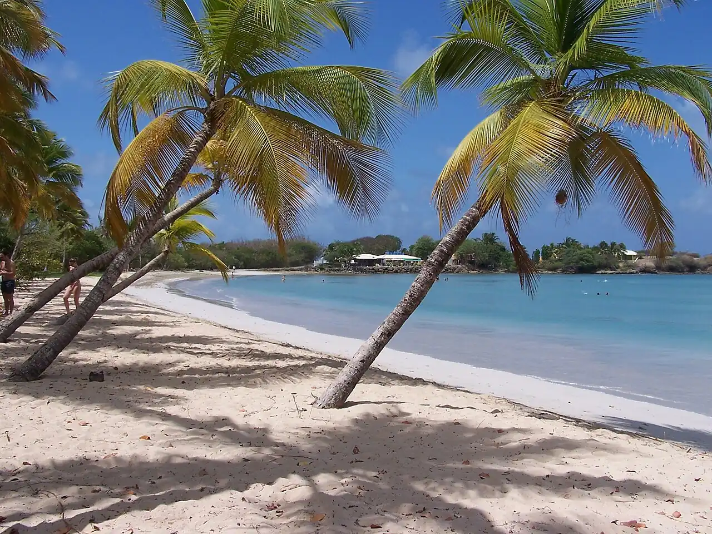

Grande Anse des Salines
Sainte-Anne, Martinique · baignade, snorkeling

Longue plage de sable blond bordée de cocotiers à la pointe sud de la Martinique. Eau calme et claire, idéale pour nager et faire un peu de snorkeling près des rochers.
- Lieu
- Sainte-Anne, Martinique
- Niveau
- Débutant
- Activités
- baignade, snorkeling
- Type d'eau
- Mer / océan
- Coordonnées
- 14.40, -60.88 (position approximative du secteur)
Dangers à connaître
- Mancenilliers : sève et fruits toxiques, ne pas s’abriter dessous sous la pluie.
- Très fréquentée le week-end, peu d’ombre sûre.
Le conseil d'Ocean Buddy
Ne t’abrite jamais sous les arbres marqués d’une bande rouge : ce sont des mancenilliers.
Ouvrir dans Ocean Buddy Télécharger sur l'App Store
Source : Fiche Ocean Buddy · septembre 2026 · à vérifier localement.